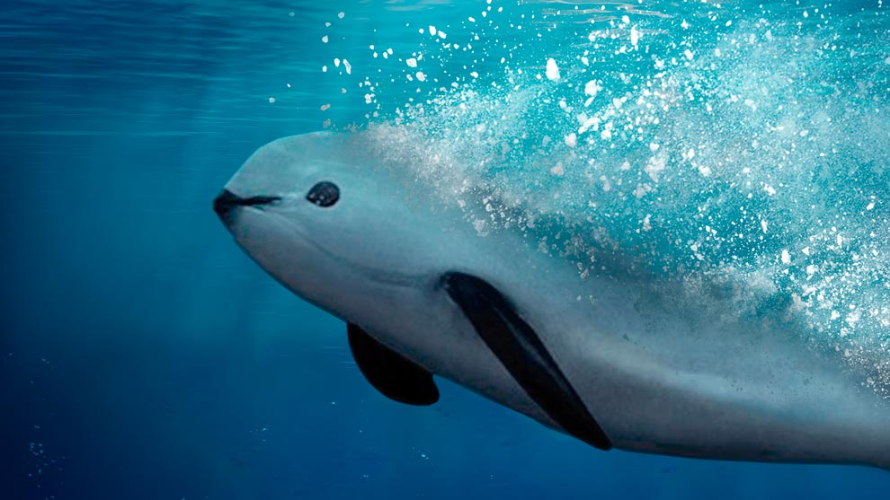

VAQUITA MARINA
Se localiza en la reserva de la biosfera de las aguas mexicanas del Golfo de California, es
uno de los cetáceos más pequeños del mundo (150 cm) con un peso promedio de 50 kg. A
pesar de que solo ha pasado medio siglo desde que fue vista por primera vez, hoy se
encuentra en grave peligro de extinción debido a que queda atrapada en las redes de
pesca, aunque esta práctica esta prohibida. Se estima que la población se reduce hasta el
15% cada año.
 |